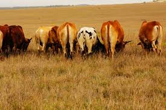
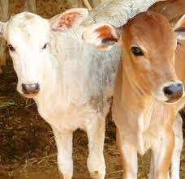

Holistic Agriconsult
Our Services/Expertise
- Livestock development policy and practice across the value chain
- Design, Measurement and Evaluation
- Statistical Design and methodology of a survey/ research
- Analytic epidemiology and meta-analysis
- Pastoral livelihoods (protection and diversification)
- Livestock emergency interventions for food and nutrition
- Livestock business hub and circular economy models
- Sanitary phytosanitary strategy development
- Cross-border animal health collaborative initiatives
- Multi-stakeholder Programs and projects management,

Figure 1: Cattle value chain


Figure 6: Paultry value chain egg production
- Evidence-based policy dialogue and advocacy
- Mapping value chain actors and capacity building
- Conducting social, cultural and legal acceptability of projects and programs
- Analysis, review and development of livestock policies and strategies
- Participatory researcher methods for baseline, mid-term and final evaluations
- Fisheries and aquatic sector research and development
- Disaster Risk Reduction and Climate change mitigation
- Public Private Partnership and rural community development, capacity building